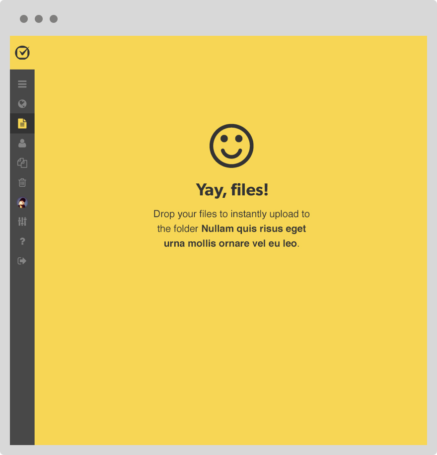
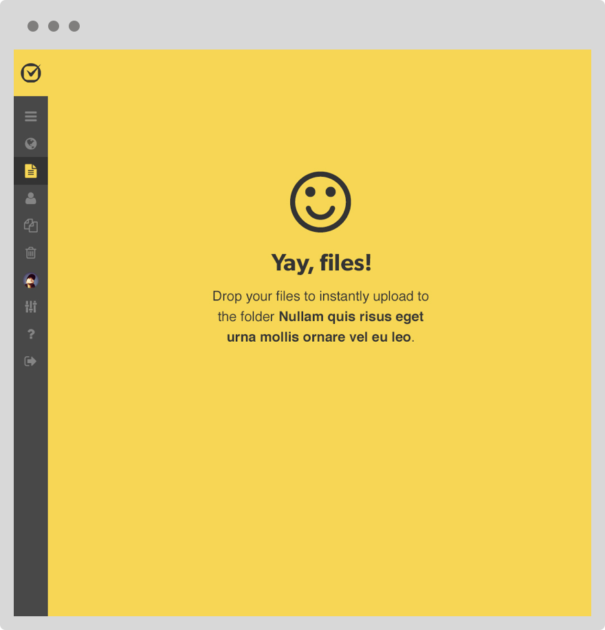

Google Docs, Dropbox, and Box are the leading cloud-based document management systems. To stay competitive, Clio needs to develop it’s own application that will specialize document management focused on the needs of lawyers and attorneys.
My team faced many challenges with this project. From our persona research, we knew that legal professionals value security above all things. Many still don’t trust the cloud. Keeping this in mind at all times, we focused on the collaboration and document management tools customers would need for their day to day operations.
I researched the flows and interfaces of many competitors. With the help of the design team and many critiques, I designed a layout that would give customers the most real estate for scrolling unknown lists of content. To aid with limited screen real estate, modal windows also took the full height of the customer's browser. Whether it was folders or files, I wanted people to have lots of vertical space to explore what they needed. I implemented a contextual sidebar that would load content based on what was selected from the list. Features such as comments, collaborators, audit trail, document versions, or information about the document itself would be loaded into the sidebar. We wanted to increase performance. All forms were editable inline, so that the customers wouldn't have to change pages. We also made the layout responsive so that customers could bring their documents on their mobile devices.
We leaned heavily on Angular and it's components to provide the performance for our single page application. This was definitely a learning curve. SLIM and SCSS was also used to make development faster.
 
